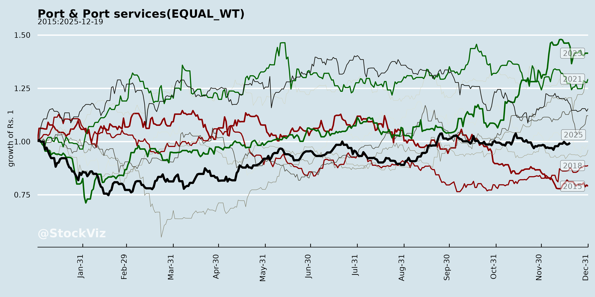
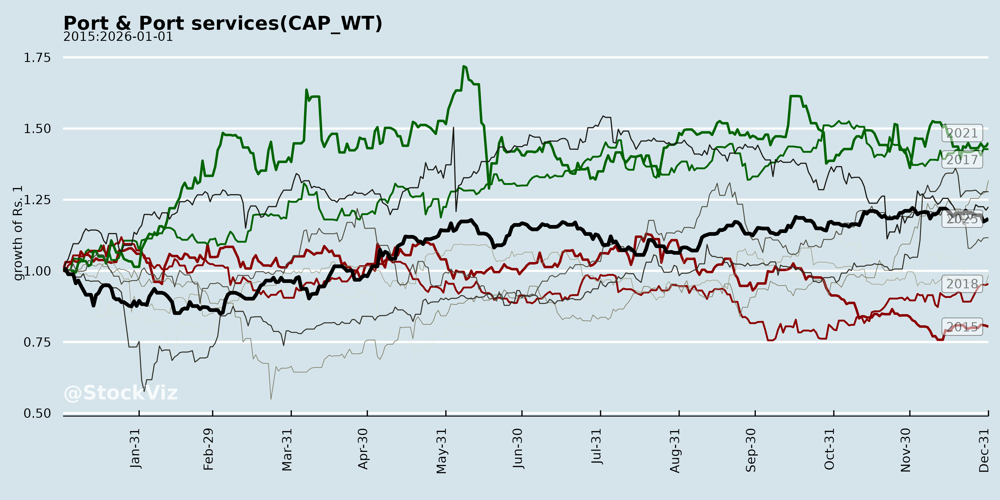
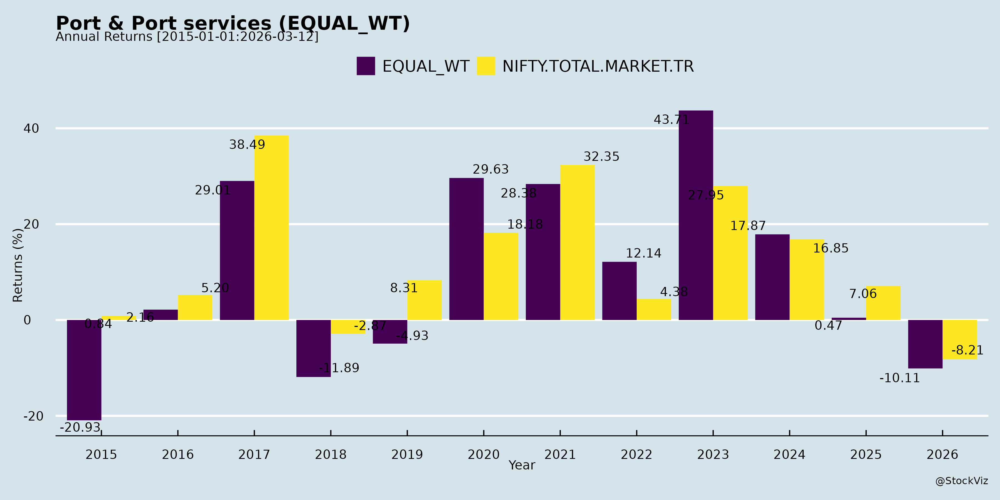
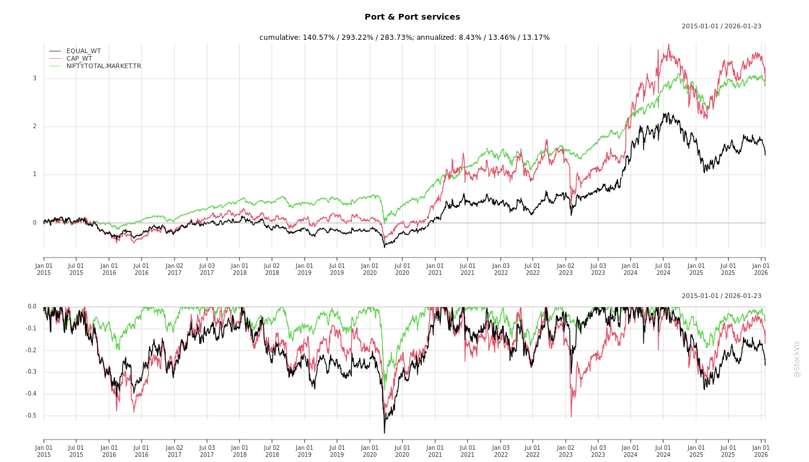
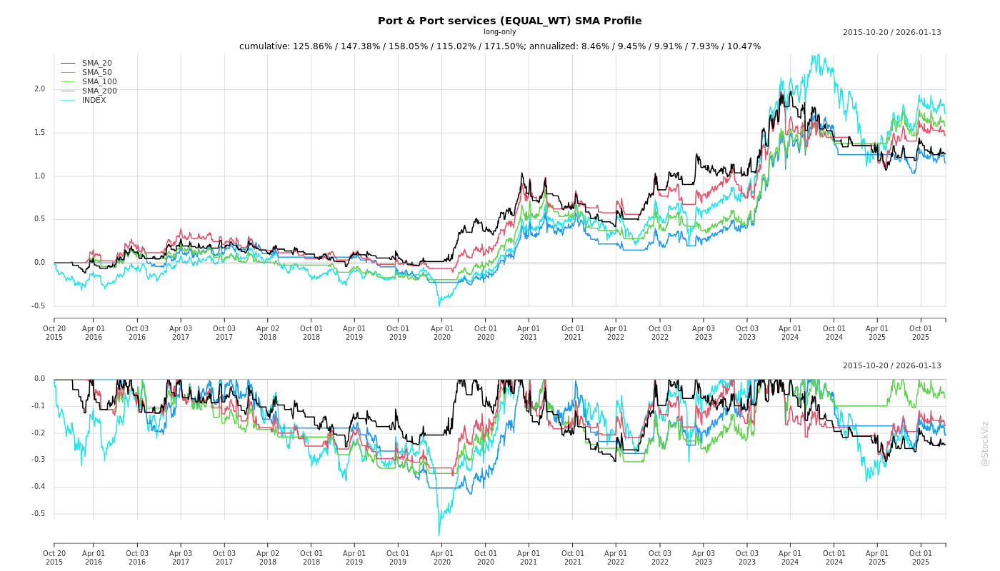
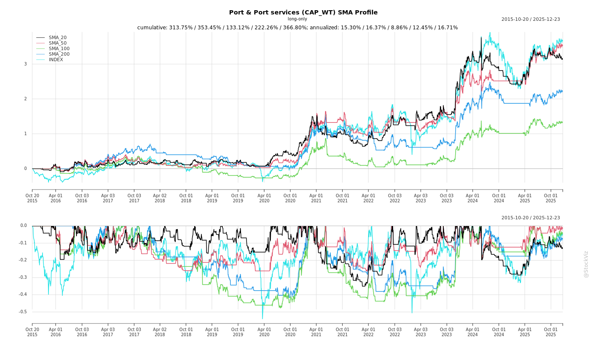
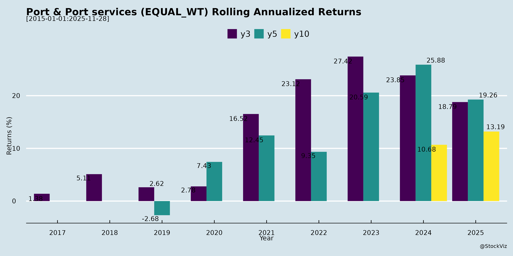
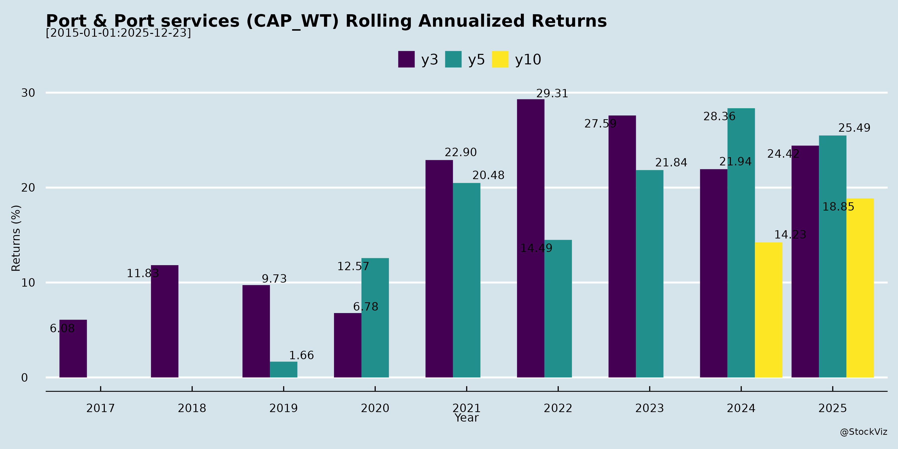

Port & Port services
Industry Metrics
February 20, 2026
Annual Returns




Cumulative Returns and Drawdowns

SMA Scenarios


Current Distance from SMA
Rolling Returns


Market Cap
EBIT (% of Industry Total)
Revenue (% of Industry Total)
AI Summaries
Analyst
asof: 2025-11-30
Analysis of Indian Ports & Port Services Sector
Using the provided documents (regulatory filings from Adani Ports, JSW Infrastructure, Gujarat Pipavav Port Limited, and Allcargo Terminals’ Q2/H1 FY26 earnings transcript), the analysis focuses on sector-level insights. The filings highlight investor/analyst interactions (indicating strong institutional interest) and detailed operational/financial commentary from Allcargo Terminals (ATL), which provides the most substantive sector context. Key themes include government-driven capacity expansion, trade dynamics, and company-specific growth plans amid moderating global growth.
Tailwinds
- Government Initiatives and Policy Support: SagarMala program (574 projects worth ~INR 6 lakh crore), shipbuilding financial assistance extended to March 2026, and development of 23 operational waterways by 2030 are fostering capacity addition (500-550M tonnes p.a. FY23-28, led by coal, containers, petroleum) and technological upgrades (e.g., green fuels). These enhance efficiency and position India as a maritime hub.
- Robust Trade and Cargo Growth: Port volumes grew 4% QoQ and 6% YoY in Q2 FY26; addressable CFS/ICD market up 10% YoY/3% QoQ. Potential India-US trade agreement could boost EXIM flows in energy, manufacturing, and tech.
- Domestic Momentum: Sequential improvements in volumes (e.g., ATL: 168k TEUs in Q2, +12% QoQ), revenue (+11% QoQ), and EBITDA (+17% QoQ). Active investor meetings (e.g., Adani in Singapore, JSW/GPPL/JM Financial events) signal confidence.
- Operational Efficiencies: Companies like ATL report scale benefits (transport/equipment costs down), tech adoption (yard management, digital apps like myCFS), and ESG shifts (solar power, reducing electricity costs).
Headwinds
- Global Macro Pressures: IMF projects gradual moderation in global growth (3.3-3.1% through 2026), with advanced economies at ~1.5%. Persistent trade tensions and geopolitical uncertainty could dampen cargo volumes.
- Inflation and Yield Pressures: Easing inflation is positive, but EBITDA/TEU yields (e.g., ATL at INR 2,390) must balance market share gains; potential moderation as capacity scales.
- Modal Shifts: Gradual shift from road to rail (e.g., DFCCIL) may impact short-term CFS/ICD reliance, though companies are adapting (e.g., ATL’s rail-connected Farukhnagar ICD).
- Execution Dependencies: Investor meetings note dates “subject to change due to exigencies,” reflecting operational flexibility needs.
Growth Prospects
- Capacity Expansion: Sector poised for 500-550M tonnes p.a. addition; ATL plans to grow from 8.3L TEUs (start FY26) to 10.5L (current) and 13L+ TEUs by FY27-28 via 4 projects (JNPA yard +170k TEUs live; Mundra/Chennai/Farukhnagar upcoming). Targets 80-85% utilization (current: 76-77%).
- Volume Trajectory: ATL monthly volumes rose from 55.5k TEUs (Q1) to 62.5k (Q2 avg)/66k (Sep run-rate), driven by imports, capacity unlocks, and market growth (4-6% port volumes). H1 FY26 flat YoY but Q2 strong; H2 expected to accelerate.
- Financial Leverage: Strong cash flows funding expansions (e.g., ATL: INR120cr equity raise via warrants/rights issue; INR70cr debt prepayment). EBITDA/TEU sustainable at INR2,200-2,300.
- Market Positioning: ATL estimates 12.5-13% share in 80% of India’s EXIM trade (5 locations, 7 facilities). Competitors like Navkar/GDL exist, but focus on EXIM (75-80% imports) provides edge.
Key Risks
- Geopolitical/Trade Disruptions: US tariffs/FTAs could impact 1/5 of EXIM volumes (pharma, gems, agri less CFS-relevant), though minimal current effect.
- Commodity/Corridor Volatility: No major shifts yet from FTAs/policies, but seasonal cargo mix (chemicals/manufacturing) could fluctuate.
- Execution and Capex Risks: Phased expansions (e.g., ATL: Mundra end-2026, Farukhnagar Apr-2027) face land/rail delays; total capex ~INR400cr, funded via accruals/debt/equity.
- Competition and Utilization: New capacity risks over-supply if demand lags; greenfield gestation (e.g., Farukhnagar to 75-80% util. by 2029).
- Regulatory/No UPSI: Meetings emphasize Q&A only, no presentations/UPSI, reducing info asymmetry but highlighting reliance on public trends.
Summary
The Indian Ports & Port Services sector benefits from strong tailwinds like policy-driven capacity builds and trade growth, offsetting headwinds from global slowdowns and trade tensions. Growth prospects are robust (10-17% volume/revenue upside via expansions, targeting 13L+ TEUs capacity), supported by healthy cash flows and 80-85% utilization. Key risks center on execution, geopolitics, and demand sustainability, but companies demonstrate resilience (e.g., ATL’s Q2 growth, debt reduction). Overall, positive outlook with investor interest (multiple conferences) signaling sector momentum into FY26-27. Sector players like Adani/JSW/GPPL/ATL are actively expanding amid 4-6% baseline port growth.
Financial
asof: 2025-11-30
Summary Analysis: Indian Ports & Port Services Sector (Based on Q3 FY25 Results of Key Players - Adani Ports, JSW Infra, GPPL)
The sector demonstrates robust operational resilience and growth, driven by volume increases and strategic expansions. Adani Ports (market leader) reported 15% YoY revenue growth to ₹7,964 Cr (Q3) and 11% PAT growth to ₹2,518 Cr, fueled by port/SEZ ops (₹7,413 Cr). JSW Infra saw 26% revenue surge to ₹1,182 Cr and 32% PAT rise to ₹336 Cr, boosted by logistics integration. GPPL maintained steady standalone revenue (~₹2,629 Cr) with PAT at ₹940 Cr, though flat YoY amid disputes. Nine-month trends: Adani +11% revenue (₹21,987 Cr), JSW +20% (₹3,193 Cr), GPPL flat. High EBITDA margins (Adani ~60%, JSW ~50%) reflect efficiency. Overall, sector benefits from India’s trade boom but faces regulatory hurdles.
Tailwinds (Positive Drivers)
- Strong Volume & Revenue Momentum: Cargo handling growth (Adani’s ports up; JSW’s terminals expanding). India’s EXIM trade (projected 8-10% CAGR) supports utilization.
- EBITDA Margins & Cash Generation: Adani’s operating margin ~60%; JSW ~50%; healthy DSCR (Adani 1.83-6.04x, JSW 2-5x). Low debt (Adani D/E 0.77x; JSW 0.57x).
- Capex Discipline & Dividends: Asset covers >100%; GPPL interim dividend ₹4/share (₹1,934 Cr payout).
- Macro Support: Sagarmala initiatives, Gati Shakti for port infra; stable forex aiding ops.
Headwinds (Challenges)
- Regulatory/Legal Disputes: GPPL’s GMB BG encashment (₹185 Cr recoverable?) & LD claims (₹338 Cr +18% interest); arbitration on tank farm refund (₹672 Cr est. liability). Adani’s lingering SSR overhang & 3 SEBI notices (RPTs, shareholding).
- One-offs & Costs: Exceptional VRS settlements (Adani ₹226 Cr); cyclone Tauktae insurance delays (GPPL ₹430 Cr pending); tax remeasurements (GPPL deferred tax hit ₹169 Cr from indexation removal).
- Flat Volumes in Spots: GPPL revenue stagnant; Adani forex losses (₹25 Cr Q3).
- Geopolitical Noise: Adani executive’s US DOJ/SEC indictment (company not named, no financial impact claimed).
Growth Prospects
- ****Acquisitive Expansion**: Adani’s spree (Gopalpur Port ₹3,080 Cr EV; Astro Offshore USD 195 Mn; 160+ subs incl. intl.); JSW’s Navkar (logistics, 70% stake); GPPL rail assoc. (PRCL).
- Capacity Additions: Adani’s infra devt. gain ₹603 Cr (Ennore stake sale); JSW Jaigarh/Mangalore expansions; Vizhinjam, Dharamtar projects.
- Diversification: Logistics (JSW Navkar); intl. ports (Adani Haifa, Colombo; JSW Middle East).
- Long-term: India port capacity to 3.5 Bn tonnes by 2030; EV/shipbuilding synergies; EBITDA CAGR 15-20% potential.
Key Risks
| Risk Category | Details | Mitigants |
|---|---|---|
| Regulatory/Legal | GMB/arbitration disputes (GPPL ₹1 Bn+ exposure); SEBI probes (Adani); concession renewals. | Legal opinions; arbitration progress; strong balance sheets. |
| Operational | Cargo cyclicality (economy slowdown); cyclone/flood risks (Tauktae precedent). | Insurance claims; diversified cargo (dry bulk, containers). |
| Financial | Debt refinancing (Adani NCDs ₹5,819 Cr); forex volatility (Adani hedges). | Low leverage; high covers (2.48x book value). |
| Geopolitical | Intl. ops exposure (Adani 50+ overseas subs); US probes spillover. | No direct impact claimed; domestic focus. |
| Tax/Policy | Indexation removal hikes DTL (GPPL ₹169 Cr); LTCG changes. | New regime elections; cash buffers. |
Outlook: Bullish with 12-15% sector revenue CAGR FY25-27, led by Adani/JSW expansions. Risks skewed to legal (monitor GPPL disputes), but tailwinds from trade/volumes dominate. Investors: Focus on ROCE (>20% for leaders) & capex ROIs.
General
asof: 2025-11-30
Analysis of Indian Ports & Port Services Sector
Based on the provided announcements from key players (Adani Ports, JSW Infrastructure, Gujarat Pipavav Port Ltd., and Allcargo Terminals), the sector shows a mix of positive governance/ESG momentum and operational/regulatory challenges. These reflect broader trends in India’s port ecosystem, driven by trade growth (e.g., via Sagarmala initiatives), privatization, and capacity needs amid rising container/coal traffic. Below is a structured analysis of headwinds, tailwinds, growth prospects, and key risks, followed by an executive summary.
Tailwinds (Supportive Factors)
- ESG Improvements: Adani Ports’ MSCI ESG rating upgrade from ‘CCC’ to ‘B’ (Oct 31, 2025) signals stronger sustainability efforts, enhancing investor appeal amid global ESG focus. This could lower capital costs and attract foreign inflows.
- Capacity Expansion Initiatives: Allcargo Terminals’ extension of term sheet for 30-acre land lease in Chennai (Sep 2025, Rs. 9 Cr annual rent, 15% escalation every 3 years) for CFS/ICD evaluation underscores proactive infrastructure scaling to capture rising cargo volumes.
- Governance Stability: Gujarat Pipavav Port’s auditor switch (to M S K A & Associates) and Independent Director re-appointment (Mr. Samir Chaturvedi till 2030) indicate robust compliance, supporting long-term operational credibility.
Headwinds (Challenges)
- Regulatory Scrutiny & Tax Disputes: JSW Infrastructure’s subsidiary (Ennore Coal Terminal) received a GST SCN (Sep 26, 2025) for Rs. 96.58 Cr demand (Apr 2019–Mar 2024 period) plus interest/penalty. Though contested with “no material impact,” such notices tie up resources and create uncertainty.
- Lease/Term Sheet Dependencies: Allcargo’s reliance on short-term extensions (to Oct 31, 2025) for expansion highlights execution delays, potentially inflating costs amid high escalation rates.
Growth Prospects
- Infrastructure Build-Out: Allcargo’s Chennai land deal positions it for ICD/CFS growth, aligning with India’s 7–8% cargo traffic CAGR (driven by EXIM trade, coal imports). Adani’s ESG edge could accelerate similar expansions.
- Privatization & Efficiency Gains: Routine board actions (e.g., GPPL) support smoother operations in privatized ports like Pipavav (APM Terminals), with potential for higher throughput.
- Sector-Wide Upside: Combined with national pushes (e.g., 3,000+ MTPA capacity additions by 2030), these firms could benefit from modal shifts to coastal shipping and green port tech, targeting 2–3x volume growth by 2030.
Key Risks
| Risk Category | Details from Documents | Sector Implications |
|---|---|---|
| Regulatory/Litigation | JSW’s Rs. 96.58 Cr GST SCN (contested but ongoing). | Frequent tax probes (GST/ITR) could lead to 10–20% EBITDA hits if upheld; delays capex. |
| Execution/Contractual | Allcargo’s term sheet extensions signal negotiation hurdles. | Rising lease costs (15% escalation) amid land scarcity; failure to finalize could stall expansions. |
| Financial | Potential outflows from penalties/interest (JSW); high security deposits (Allcargo: 6 months’ rent). | Leverage spikes if disputes escalate; ESG lapses could raise funding costs. |
| Operational | Coal-specific exposure (JSW Ennore) vulnerable to energy transitions. | Trade volatility (e.g., global slowdowns) impacts utilization; competition from DP World, DPCL. |
| Governance | Auditor changes (GPPL) – routine but signals past issues. | Minor director/audit risks if not seamless. |
Executive Summary
- Overall Sentiment: Mildly positive (tailwinds from ESG/capacity > headwinds), with Adani/Allcargo driving optimism and JSW tempering it via taxes. Sector poised for 10–15% revenue growth (FY26–27) on trade recovery, but risks cap upside.
- Investment Outlook: Buy on dips for ESG leaders (Adani); monitor JSW litigations. Key watch: GST resolutions, lease finalizations by Q4 FY26.
- Recommendations: Firms should prioritize dispute resolutions and green capex to mitigate risks and unlock prospects.
This analysis is derived directly from the filings, contextualized to sector dynamics (e.g., NMPT data, SEBI disclosures). No material criminal/escalatory content detected.
Investor
asof: 2025-12-03
Summary Analysis: Indian Ports & Port Services Sector (Based on Provided Documents)
The documents highlight key players like Adani Ports (APSEZ), JSW Infrastructure, Gujarat Pipavav Port (GPPL), and Allcargo Terminals (ATL), showcasing robust operational updates, investor interactions, earnings transcripts, and strategic expansions amid India’s maritime push. The sector benefits from strong fundamentals (e.g., 11,099 km coastline, 95% trade via maritime routes, ~2,700 mtpa capacity), government initiatives (Sagarmala, Maritime India Vision 2030), and privatization trends. Below is a structured analysis of tailwinds, headwinds, growth prospects, and key risks.
Tailwinds (Positive Drivers)
- Economic & Policy Support: India’s GDP poised to hit $7 Tn+ (3rd largest globally), with capex surge (₹30 Tn infra pipeline). Sagarmala (574 projects, ₹6 Tn), Gati Shakti, and MIV 2030 target 10,000 mtpa capacity by 2047 via brownfield expansions, mega ports, transshipment hubs (e.g., South India), and landlord model favoring private operators (12 major ports: 1,630 mtpa capacity).
- Cargo Volume Growth: Port volumes up 4-6% YoY/QoQ; addressable CFS/ICD market up 10% YoY. JSW handled 28.9 MT (Q2 FY26, +3% YoY), 58.2 MT (H1, +4%); ATL 168k TEUs (Q2, +7% YoY), 319k (H1, flat but +12% QoQ).
- Private Sector Momentum: JSW (2nd largest private operator, 177 mtpa), expansions (e.g., Jaigarh LPG, Dharamtar, Oman greenfield 27 mtpa). ATL capacity from 0.83M to 1.3M TEUs (JNPA, Mundra, Chennai, Farukhnagar). Investor meets (Adani Singapore conference, GPPL JM Financial).
- Financial Strength: JSW revenue ₹1,372 Cr (Q2, +26% YoY), EBITDA ₹716 Cr (+18%), net debt/EBITDA 0.75x; ATL EBITDA/TEU ₹2,390 (+17% YoY). Low leverage, ratings (BBB-/Stable).
- Synergies & Efficiency: JSW group cargo (steel, cement); ATL scale efficiencies (transport/equipment optimization, solar shift, digital apps like myCFS).
Headwinds (Challenges)
- Global/Macro Pressures: IMF projects global growth moderation (3.3-3.1% ’24-’26), trade tensions (India-US tariffs), geopolitics impacting EXIM (e.g., JSW Paradip Iron Ore down 2.1 MT YoY due to weak exports).
- Volume Variability: Subdued iron ore/coal in spots; ATL H1 flat YoY despite QoQ gains.
- Cost & Execution Pressures: Rising capex (JSW ₹9,000 Cr FY25-30 logistics; ATL ₹400 Cr expansions). Debt for growth (ATL rights issue ₹80 Cr + warrants).
- Competition: Intensifying in CFS/ICD (e.g., Navkar, GDL); market share battles (ATL ~12.5-13% in key 80% EXIM markets).
Growth Prospects
- Capacity Explosion: Sector +500-550 mtpa (FY23-28); JSW to 400 mtpa (FY30, +2.3x via 121.6 mtpa approved projects +90 mtpa greenfields like Keni/Murbe/Oman). ATL to 1.3M TEUs (2-3 yrs, 80-85% utilization).
- Diversification: Brownfield (JSW Tuticorin 7 mtpa, JNPA liquids 4.5 mtpa); greenfield (JSW Jatadhar 30 mtpa); logistics (JSW ₹8,000 Cr revenue FY30 via ICDs/GCTs/Navkar).
- Revenue/EBITDA Trajectory: JSW FY21-25 PAT CAGR 52%, EBITDA 29%; ATL EBITDA/TEU sustainable ₹2,200-2,300. Privatization bids, inorganic (JSW leveraging balance sheet).
- Timeline: JSW FY28E 298 mtpa; ATL Mundra/Chennai ’26-’27, Farukhnagar ’27 (rail/DFCC for domestic).
- Upside Catalysts: FTAs, rail shift (road-to-rail), group captive cargo (JSW steel 51.5 mtpa FY31).
| Player | Current Capacity | FY30 Target | Key Drivers |
|---|---|---|---|
| JSW Infra | 177 mtpa | 400 mtpa | Expansions (121 mtpa), greenfields (90 mtpa), logistics ₹8,000 Cr rev. |
| ATL | 1.05M TEUs | 1.3M TEUs | JNPA/Mundra/Chennai/Farukhnagar; 16-17% vol. growth run-rate. |
| Adani/GPPL | N/A (implied large) | Sector-leading | Investor focus, privatization. |
Key Risks
- Macro/Commodity Volatility: Iron ore/coal slumps (JSW Paradip -3.4 MT H1); US tariffs/agri/pharma (~1/5 EXIM) non-CFS addressable.
- Execution Delays: Greenfield gestation (e.g., JSW Keni env. clearance, ATL Farukhnagar rail); capex overruns (JSW Oman US$419 Mn, IRR 15%).
- Leverage & Funding: Equity infusions (ATL ₹120 Cr), debt (JSW net debt ₹1,810 Cr); rights/preferential dilution.
- Competition/Geopolitics: Trade wars, port congestion; shift to rail/domestic may dilute EXIM focus.
- Regulatory/External: Env. clearances, monsoons, global slowdown (IMF 1.5% advanced economies).
- Sustainability: GHG intensity, water use (JSW tracking reductions, but sector scrutiny).
Overall Outlook: Strongly Positive with tailwinds from policy/infra boom outweighing headwinds. Sector poised for 2-3x growth (e.g., JSW 177→400 mtpa), driven by privatization and EXIM (4-6% CAGR). Players like JSW/ATL show execution edge (low debt, EBITDA margins 52-53%). Monitor macro cargo (iron ore) and project timelines for near-term volatility. Recommended for growth-oriented investors.
Meeting
asof: 2025-11-30
Summary Analysis: Indian Ports & Port Services Sector (Based on Q2/H1 FY26 Results from APSEZ, JSW Infra, GPPL, Allcargo Terminals)
The sector demonstrates robust financial performance amid capacity expansions and volume growth, driven by India’s trade recovery and infra push. Key players show revenue/PAT growth (e.g., JSW +24% YoY revenue H1; GPPL PAT ₹2,590 Cr H1), high cash reserves (GPPL ₹9,935 Cr deposits), and dividends (GPPL ₹5.40/share interim). However, regulatory/tax headwinds persist. Below is a structured analysis:
Tailwinds (Positive Factors)
- Strong Operational Momentum: Revenue growth across peers—JSW H1 revenue ₹2,489 Cr (+24% YoY), GPPL standalone H1 ₹5,498 Cr (+16% YoY), Allcargo consolidated H1 ₹394 Cr (+2% YoY). Port ops dominant (JSW 88% revenue), supported by higher cargo volumes.
- Profitability & Balance Sheet Strength: High margins (JSW H1 PBT ₹936 Cr, 35% margins); PAT growth (GPPL +32% YoY H1). Strong liquidity (JSW cash ₹605 Cr + deposits ₹1,495 Cr; GPPL cash ₹765 Cr + deposits ₹9,170 Cr).
- Capex & Expansion: JSW H1 capex ₹902 Cr (ports/logistics); GPPL capex ₹752 Cr. New assets/subsidiaries (JSW: Navkar acquisition; Allcargo: Speedy 100% sub, new FTWZ sub).
- Shareholder Confidence: APSEZ 99.34% approval for new Independent Director; dividends signal stability.
- Macro Support: Govt. MCA circulars enable e-voting/postal ballots; sector benefits from trade growth (ports handle 92-93% polled volumes from promoters/institutions).
Headwinds (Challenges)
- Regulatory & Legal Disputes: GPPL ongoing GMB bank guarantee encashment (₹185 Cr + ₹371 Cr demands); customer arbitration (₹681 Cr BG submitted). Allcargo GST demands (₹25 Cr + penalty, stayed by HC); Speedy SCN (₹4 Cr).
- Tax Scrutiny: Allcargo IT search (u/s 132/158BC notices); no material impact expected but ongoing.
- Rising Costs: Finance costs up (JSW H1 ₹191 Cr; Allcargo ₹29 Cr H1) due to borrowings/capex. Employee/depreciation steady but elevated (JSW dep. ₹292 Cr H1).
- Forex/Operational Volatility: JSW forex hedges show losses (OCI ₹168 Cr H1); past cyclone claims resolved but disruptions noted (GPPL).
Growth Prospects
- High (Strong Outlook): Capacity additions (JSW: 20+ subs/terminals like Jaigarh, Paradip); logistics integration (JSW Navkar; GPPL rail associate). H1 revenue/EBITDA growth signals 15-25% FY26 potential.
- Volume-Led Expansion: Port traffic up (JSW port segment ₹2,189 Cr H1); govt. infra (e.g., Sagarmala) + trade (exports/imports). Allcargo CFS focus complements (Speedy/HORCL stakes).
- M&A/Inorganic: JSW overseas FZE; Allcargo HORCL (7.6%) + FTWZ. APSEZ governance strengthening for scale.
- Projected: Sector cargo handling to grow 8-10% CAGR (FY25-30), driven by Mundra/Kandla hubs.
Key Risks
| Risk Category | Description | Impact Level | Mitigation |
|---|---|---|---|
| Regulatory/Legal | Disputes (GPPL GMB/arbitration; Allcargo GST/IT) could tie up cash (₹1,200+ Cr exposure). | High | Legal stays/BGs; expert advice. |
| Tax/Litigation | IT searches (Allcargo); GST demands (₹30+ Cr stayed). | Medium-High | Responses filed; no material provisions. |
| Operational | Cyclones/power disruptions (GPPL past); forex (JSW OCI volatility). | Medium | Insurance claims received; hedges. |
| Financial | Debt rise (JSW borrowings ₹4,898 Cr); capex funding (₹900 Cr+ H1). | Medium | Strong cash flows (JSW ops ₹1,311 Cr H1). |
| Execution | Sub integrations (JSW Navkar); new ventures (Allcargo FTWZ). | Low-Medium | Promoter control (JSW 100% poll). |
Overall Sector Outlook: Positive (Buy/Hold). Tailwinds from volumes/capex outweigh headwinds; growth 15-20% FY26 possible. Monitor disputes (20-30% PAT risk if adverse). Peers like APSEZ/JSW lead; GPPL cash-rich; Allcargo turnaround via subs.
Press Release
asof: 2025-11-30
Summary Analysis: Indian Ports & Port Services Sector
Using the provided documents from Adani Ports & SEZ Ltd (APSEZ), JSW Infrastructure Ltd, and Allcargo Terminals Ltd (ATL) as inputs, this analysis covers headwinds, tailwinds, growth prospects, and key risks for the Indian Ports & Port Services sector. These releases highlight Q2 FY26 financials (JSW, ATL), sustainability commitments (APSEZ), and strategic expansions, reflecting a sector driven by volume growth, capacity builds, and ESG integration amid commodity market volatility.
Tailwinds (Positive Factors)
- Robust Financial Performance: JSW reported 26% YoY revenue growth to ₹1,372 Cr, 18% EBITDA growth to ₹716 Cr, and PAT of ₹369 Cr; ATL saw 6% YoY/11% QoQ revenue growth to ₹207 Cr and 24% YoY/17% QoQ EBITDA growth to ₹40 Cr. Operational leverage from volume-mix improvements and cost efficiencies (e.g., JSW port EBITDA margin up to 53%).
- Volume Momentum: JSW cargo up 3% YoY to 28.9 MT (group cargo share rose to 54%); ATL volumes up 12% QoQ. Diversified growth from ports like Jaigarh, Dharamtar, and Navkar Corp (EXIM +20% YoY, domestic +46% YoY).
- Sustainability Leadership: APSEZ’s TNFD adoption (first for Indian Integrated Transport Utility) signals ESG tailwinds, with mangrove restoration (4,200 Ha afforested) and biodiversity focus enhancing resilience and investor appeal.
- Strong Balance Sheets: JSW’s net debt/EBITDA at 0.75x, ₹3,088 Cr cash; investment-grade ratings (BBB-/Stable) from S&P/Fitch, enabling capex without leverage strain.
Headwinds (Challenges)
- Commodity Market Weakness: JSW faced 2.1 MT shortfall at Paradip Iron Ore terminal due to weak seaborne iron ore exports, capping overall volume growth at 3% YoY (would have been ~10% otherwise).
- Moderated Growth: Despite positives, JSW’s volume growth lagged revenue due to specific port underperformance; ATL’s PAT flat YoY despite EBITDA gains, indicating margin pressures.
- External Dependencies: Reliance on hinterland cargo, group volumes (JSW at 54%), and market cycles (e.g., iron ore exports) exposes sector to global trade fluctuations.
Growth Prospects
- Capacity Expansion: JSW targeting 400 MTPA by FY30 (from 177 MTPA) via ₹30,000 Cr capex + ₹9,000 Cr for logistics; APSEZ at 633 MTPA aiming for 1 Bn tonnes by 2030 (28% India share). ATL advancing multimodal parks.
- Strategic Projects: JSW’s greenfield ports (Keni, Murbe), Ballari MMLP acquisition (₹380 Cr capex, ops by Q4 FY26), Kolkata berth concession (6.3 MTPA capacity), and Navkar integration for pan-India logistics.
- Diversification: Shift to containers/logistics (JSW/Navkar), “shore-to-door” models (APSEZ’s ports + rail/warehousing/trucks), and privatization (e.g., Kolkata berths). Sector benefits from India’s trade growth, with JSW/ATL emphasizing EXIM/domestic cargo.
- ESG-Driven Opportunities: APSEZ’s TNFD disclosures from FY26 position sector for global standards (e.g., COP30 alignment), attracting capital for nature-positive infra.
| Company | Current Capacity | Target | Key Enablers |
|---|---|---|---|
| APSEZ | 633 MTPA | 1 Bn tonnes (2030) | 15 ports, logistics ecosystem |
| JSW | 177 MTPA | 400 MTPA (FY30) | 12 ports, ₹39,000 Cr capex |
| ATL | CFS/ICD focus | Multimodal parks | Pan-India network (Nhava Sheva, Mundra, etc.) |
Key Risks
- Market/Commodity Volatility: Iron ore/seaborne trade weakness (JSW); broader risks include cargo demand fluctuations, competition, and client concentration.
- Execution Risks: Greenfield delays (public hearings ongoing), capex overruns (₹30,000+ Cr plans), acquisition integration (e.g., Navkar, Ballari).
- Macro/Regulatory: Wage hikes, political instability, immigration restrictions, fiscal incentives withdrawal (JSW forward-looking statements). Environmental scrutiny amid ESG push.
- Financial/Operational: Earnings volatility, debt from expansions (though low now), and sector-specific issues like vessel turnaround inefficiencies or hinterland connectivity gaps.
- Sector-Wide: Intense competition (APSEZ/JSW as top players), global economic conditions affecting trade volumes.
Overall Outlook: Strong tailwinds from expansions and financial health outweigh headwinds, positioning the sector for 10-20%+ CAGR through FY30. Sustainability (e.g., TNFD) and logistics integration are differentiators, but commodity cycles and execution remain pivotal. Investors should monitor iron ore exports and capex delivery.
Copyright © 2023 SAS Data Analytics Pvt. Ltd. All rights reserved.